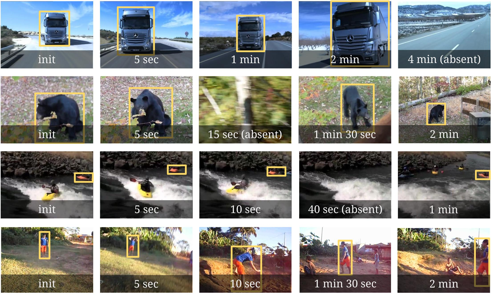

Long-term Tracking in the Wild: A Benchmark
* means equal contribution

We introduce a new video dataset and benchmark to assess single-object tracking algorithms. Benchmarks have enabled great strides in the field of object tracking by defining standardized evaluations on large sets of diverse videos. However, these works have focused exclusively on sequences only few tens of seconds long, and where the target object is always present. Consequently, most researchers have designed methods tailored to this "short-term" scenario, which is poorly representative of practitioners' needs. Aiming to address this disparity, we compile a long-term, large-scale tracking dataset of sequences with average length greater than two minutes and with frequent target object disappearance. This dataset is the largest ever for single object tracking: it comprises 366 sequences for a total of 14 hours of video, 26 times more than the popular OTB-100. We assess the performance of several algorithms, considering both the ability to locate the target and to determine whether it is present or absent. Our goal is to offer the community a large and diverse benchmark to enable the design and evaluation of tracking methods ready to be used "in the wild".